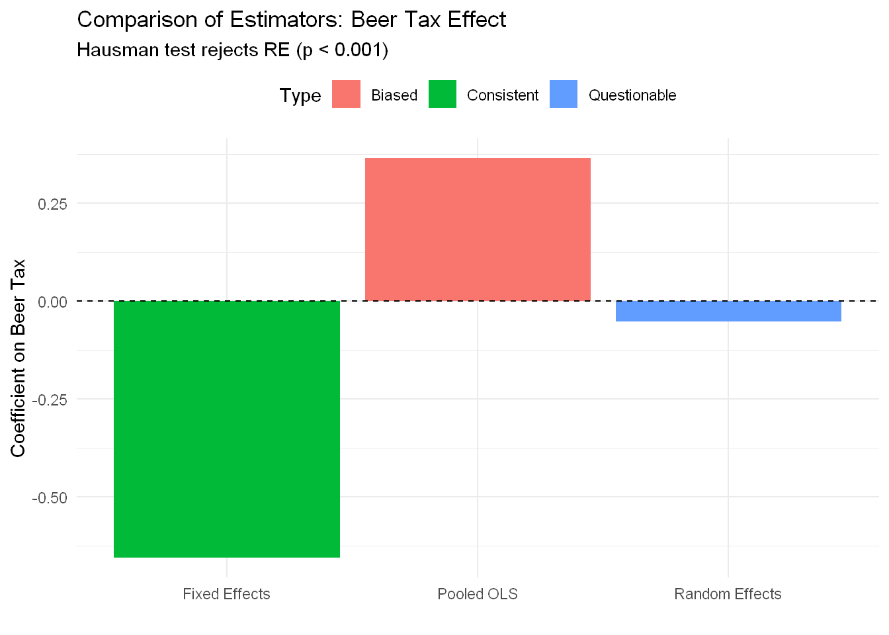

# Clear workspace
rm(list = ls())
# Set options
options(
repr.plot.width = 8,
repr.plot.height = 6,
repr.plot.res = 150,
warn = -1
)
# Set CRAN mirror
options(repos = c(CRAN = "https://cloud.r-project.org/"))
# Required packages
packages <- c(
"plm", # Panel Linear Models
"fixest", # Fixed Effects Estimation
"AER", # Applied Econometrics with R
"modelsummary", # Regression tables
"lmtest", # Coefficient testing
"clubSandwich", # Cluster-robust SEs
"knitr", # Tables
"dplyr", # Data manipulation
"ggplot2" # Plotting
)
# Install if needed, then load
invisible(lapply(packages, function(pkg) {
if (!require(pkg, character.only = TRUE, quietly = TRUE)) {
install.packages(pkg, dependencies = TRUE)
require(pkg, character.only = TRUE, quietly = TRUE)
}
}))Random Effects, Model Selection, and Inferences in Panel Data
NYU - Applied Statistics and Econometrics 2
What This Notebook Covers
This notebook explores Random Effects (RE) models and model selection in panel data analysis. Building on the Fixed Effects foundation from last week, we’ll learn when to use Random Effects, how to test model specifications, and how to get inference right.
We’ll cover:
- The Random Effects model: GLS estimation and quasi-demeaning
- The crucial orthogonality assumption: when it holds and when it fails
- Complete model selection workflow: FE vs RE vs Pooled OLS
- Specification tests: Hausman, Breusch-Pagan, F-test
- Inference with cluster-robust standard errors
- Practical applications with real data
Key datasets: - Fatalities data (continuation from FE lecture) - Grunfeld investment data (for comparing RE and FE)
1 Review: Where We Left Off
1.1 Fixed Effects Recap
Last week we learned that Fixed Effects (FE) controls for time-invariant unobservables by using only within-unit variation:
\[y_{it} = \mathbf{x}_{it}'\boldsymbol{\beta} + \alpha_i + \varepsilon_{it}\]
The FE approach: Demean to eliminate \(\alpha_i\)
\[\tilde{y}_{it} = \tilde{\mathbf{x}}_{it}'\boldsymbol{\beta} + \tilde{\varepsilon}_{it}\]
where \(\tilde{y}_{it} = y_{it} - \bar{y}_i\)
Advantages:
- Allows \(\text{Cov}(\alpha_i, \mathbf{x}_{it}) \neq 0\) (robust to endogeneity!)
- No instruments needed
- Controls for all time-invariant unobservables
Limitations:
- Cannot estimate time-invariant effects (gender, race, education level)
- Throws away between-unit variation (inefficient)
- Loses degrees of freedom (estimates N fixed effects)
1.2 The Motivation for Random Effects
When FE isn’t enough:
Research questions about time-invariant effects:
- Gender wage gap
- Returns to college quality
- Effect of birthplace on outcomes
Small within-unit variation:
- Education rarely changes in adult panels
- Industry switching is rare for firms
- Geography is fixed for regions
Efficiency concerns:
- FE discards all between variation
- With weak within variation, FE estimates are imprecise
The RE solution: Model \(\alpha_i\) as random draws from a distribution, use both within AND between variation.
The price: Requires \(E[\alpha_i | \mathbf{X}_i] = 0\) (orthogonality)
2 The Random Effects Model
2.1 Model Specification
Same equation, different interpretation:
\[y_{it} = \mathbf{x}_{it}'\boldsymbol{\beta} + \alpha_i + \varepsilon_{it}\]
Fixed Effects view:
- \(\alpha_i\) = fixed parameter (one for each unit)
- \(N\) parameters to estimate
- Can correlate with \(\mathbf{x}_{it}\)
Random Effects view:
- \(\alpha_i \sim \text{i.i.d.}(0, \sigma_\alpha^2)\) = random variable
- 1 parameter to estimate (\(\sigma_\alpha^2\))
- Must be uncorrelated with \(\mathbf{x}_{it}\) (orthogonality!)
2.2 The Composite Error
\[y_{it} = \mathbf{x}_{it}'\boldsymbol{\beta} + \underbrace{(\alpha_i + \varepsilon_{it})}_{u_{it}}\]
Error structure:
- \(\alpha_i \sim (0, \sigma_\alpha^2)\) (individual effect, constant over time)
- \(\varepsilon_{it} \sim (0, \sigma_\varepsilon^2)\) (idiosyncratic shock)
- \(u_{it} = \alpha_i + \varepsilon_{it}\) (composite error)
Key property: Errors are correlated within individuals:
\[\text{Cov}(u_{it}, u_{is}) = \sigma_\alpha^2 \quad \text{for } t \neq s\]
Intraclass correlation:
\[\rho = \frac{\sigma_\alpha^2}{\sigma_\alpha^2 + \sigma_\varepsilon^2}\]
This measures the proportion of total variance due to individual effects.
2.3 Why OLS Fails
If you run pooled OLS ignoring the correlation structure:
- Still consistent (if orthogonality holds)
- But inefficient (doesn’t use correlation information)
- Wrong standard errors (assumes independence)
Solution: Generalized Least Squares (GLS)
2.4 Feasible GLS Estimation
Step 1: Estimate variance components \(\sigma_\alpha^2\) and \(\sigma_\varepsilon^2\)
Step 2: Compute transformation parameter \[\theta = 1 - \sqrt{\frac{\sigma_\varepsilon^2}{\sigma_\varepsilon^2 + T\sigma_\alpha^2}}\]
Step 3: Quasi-demean the data \[y_{it}^* = y_{it} - \theta\bar{y}_i\] \[x_{it}^* = x_{it} - \theta\bar{x}_i\]
Step 4: Run OLS on quasi-demeaned data
The key insight:
- If \(\theta = 0\) (no individual effects) → Pooled OLS
- If \(\theta = 1\) (huge individual effects) → Within (FE)
- If \(0 < \theta < 1\) → RE is weighted average of Pooled and Within!
This is why RE can estimate time-invariant effects and is more efficient.
3 Setup and Data Preparation
3.1 Load Packages
3.2 Load Fatalities Data
We’ll continue with the Fatalities dataset to build on the FE analysis:
# Load data
data("Fatalities", package = "AER")
# Create variables (same as FE lecture)
Fatalities$fatal_rate <- Fatalities$fatal / Fatalities$pop * 10000
Fatalities$log_income <- log(Fatalities$income)Panel structure:
- States: 48
- Years: 7
- Total observations: 336
3.3 Load Grunfeld Investment Data
For comparing FE and RE, we’ll use the classic Grunfeld investment dataset where orthogonality is more plausible:
# Load Grunfeld data from plm package
data("Grunfeld", package = "plm")Grunfeld panel structure:
- Firms: 10
- Years: 20
- Total observations: 200
Key variables:
inv: gross investmentvalue: market value of firmcapital: stock of plant and equipment
# Summary statistics
summary(Grunfeld[, c("inv", "value", "capital")]) inv value capital
Min. : 0.93 Min. : 58.12 Min. : 0.80
1st Qu.: 33.56 1st Qu.: 199.97 1st Qu.: 79.17
Median : 57.48 Median : 517.95 Median : 205.60
Mean : 145.96 Mean :1081.68 Mean : 276.02
3rd Qu.: 138.04 3rd Qu.:1679.85 3rd Qu.: 358.10
Max. :1486.70 Max. :6241.70 Max. :2226.30 4 Estimating Random Effects
Two packages dominate panel data estimation in R, and they have different strengths:
plm (Panel Linear Models):
- The go-to package for Random Effects estimation — supports GLS/quasi-demeaning, variance component extraction, and the Hausman test
- Also handles FE, but not as well integrated with ‘modelsummary’ for presentation-ready tables
- Best for: RE models, specification tests (
phtest,plmtest,pFtest)
fixest (Fixed Effects by Splitting):
- Purpose-built for Fixed Effects — extremely fast, handles high-dimensional FEs, and has native cluster-robust SEs that work seamlessly with
modelsummary - Does not support RE models
- Best for: FE estimation, clustered SEs, presentation-ready tables
4.1 Basic RE Model: Fatalities
Let’s start by estimating a Random Effects model on the Fatalities data:
# Random Effects model
re_fatalities <- plm(
fatal_rate ~ beertax,
data = Fatalities,
index = c("state", "year"),
model = "random"
)
summary(re_fatalities)Oneway (individual) effect Random Effect Model
(Swamy-Arora's transformation)
Call:
plm(formula = fatal_rate ~ beertax, data = Fatalities, model = "random",
index = c("state", "year"))
Balanced Panel: n = 48, T = 7, N = 336
Effects:
var std.dev share
idiosyncratic 0.03605 0.18986 0.119
individual 0.26604 0.51579 0.881
theta: 0.8622
Residuals:
Min. 1st Qu. Median 3rd Qu. Max.
-0.471090 -0.120045 -0.021530 0.091011 0.964350
Coefficients:
Estimate Std. Error z-value Pr(>|z|)
(Intercept) 2.067141 0.099971 20.6773 <2e-16 ***
beertax -0.052016 0.124176 -0.4189 0.6753
---
Signif. codes: 0 '***' 0.001 '**' 0.01 '*' 0.05 '.' 0.1 ' ' 1
Total Sum of Squares: 12.648
Residual Sum of Squares: 12.642
R-Squared: 0.00052508
Adj. R-Squared: -0.0024674
Chisq: 0.175467 on 1 DF, p-value: 0.6753Observations:
- Theta (transformation parameter): θ ≈ 0.88
- Close to 1 → RE is mostly demeaning (close to FE)
- Individual effects are important (\(\sigma_\alpha^2\) is large)
- Coefficient on beertax: Very different than FE.
Let’s compare all three models:
# Pooled OLS
pooled_fatalities <- lm(
fatal_rate ~ beertax,
data = Fatalities
)
# Fixed Effects
fe_fatalities <- plm(
fatal_rate ~ beertax,
data = Fatalities,
index = c("state", "year"),
model = "within"
)
# Comparison table
modelsummary(
list("Pooled OLS" = pooled_fatalities,
"Fixed Effects" = fe_fatalities,
"Random Effects" = re_fatalities),
stars = TRUE,
gof_map = c("nobs", "r.squared")
)| Pooled OLS | Fixed Effects | Random Effects | |
|---|---|---|---|
| + p < 0.1, * p < 0.05, ** p < 0.01, *** p < 0.001 | |||
| (Intercept) | 1.853*** | 2.067*** | |
| (0.044) | (0.100) | ||
| beertax | 0.365*** | -0.656*** | -0.052 |
| (0.062) | (0.188) | (0.124) | |
| Num.Obs. | 336 | 336 | 336 |
| R2 | 0.093 | 0.041 | 0.001 |
Key findings:
- Sign reversal from Pooled to FE/RE:
- Pooled: +0.365*** (wrong sign - omitted variable bias!)
- FE: -0.656***
- RE: -0.052 (not significant, p = 0.68)
- FE vs RE difference:
- Estimates differ substantially (-0.656 vs -0.052)
- FE is negative and significant
- RE is near zero and insignificant
- This suggests orthogonality assumption is violated
- Hausman test will tell us which to trust
4.2 Extracting Variance Components
# Extract variance components from RE model
ercomp_fatalities <- ercomp(fatal_rate ~ beertax,
data = Fatalities,
index = c("state", "year"))
# The ercomp object has a different structure
# Extract components correctly
sigma2_id <- ercomp_fatalities$sigma2[1] # Between variance
sigma2_idios <- ercomp_fatalities$sigma2[2] # Within variance
theta_val <- ercomp_fatalities$theta[1] # Theta parameterVariance Components:
- σ²_α (between states): 0.036
- σ²_ε (within states): 0.266
- Intraclass correlation (ρ): 0.1193
- Theta (quasi-demeaning parameter): 0.8622
Interpretation:
- ρ ≈ 0.12: About 12% of total variance is between states (cross-sectional)
- About 88% is within-state variation over time
- High θ ≈ 0.86: RE does substantial demeaning (moving toward FE)
- With theta this high, RE is closer to FE than to Pooled OLS
5 The Critical Orthogonality Assumption
5.1 Testing Orthogonality: The Hausman Test
The Hausman test is the workhorse specification test for panel data:
Null hypothesis: \(E[\alpha_i | \mathbf{X}_i] = 0\) (orthogonality holds)
- If true: Both FE and RE are consistent, but RE is efficient
- If false: Only FE is consistent, RE is biased
Test statistic: \[H = (\hat{\boldsymbol{\beta}}_{FE} - \hat{\boldsymbol{\beta}}_{RE})' [\text{Var}(\hat{\boldsymbol{\beta}}_{FE}) - \text{Var}(\hat{\boldsymbol{\beta}}_{RE})]^{-1} (\hat{\boldsymbol{\beta}}_{FE} - \hat{\boldsymbol{\beta}}_{RE})\]
# Hausman test: FE vs RE
hausman_fatalities <- phtest(fe_fatalities, re_fatalities)
print(hausman_fatalities)
Hausman Test
data: fatal_rate ~ beertax
chisq = 18.353, df = 1, p-value = 1.835e-05
alternative hypothesis: one model is inconsistentDecision:
- p-value ≈ 0.0001 (< 0.05): Strong rejection!
- Orthogonality assumption is violated
- Conclusion: Use Fixed Effects for Fatalities data
What this means: State-level unobserved factors (culture, geography, enforcement) that affect both beer taxes and traffic fatalities. These violate the RE assumption.
5.2 Visualizing FE vs RE Estimates
# Extract coefficients
coef_pooled <- coef(pooled_fatalities)["beertax"]
coef_fe <- coef(fe_fatalities)["beertax"]
coef_re <- coef(re_fatalities)["beertax"]
# Create comparison plot
comparison_df <- data.frame(
Model = c("Pooled OLS", "Random Effects", "Fixed Effects"),
Estimate = c(coef_pooled, coef_re, coef_fe),
Type = c("Biased", "Questionable", "Consistent")
)
ggplot(comparison_df, aes(x = Model, y = Estimate, fill = Type)) +
geom_col() +
geom_hline(yintercept = 0, linetype = "dashed") +
labs(title = "Comparison of Estimators: Beer Tax Effect",
subtitle = "Hausman test rejects RE (p < 0.001)",
y = "Coefficient on Beer Tax",
x = "") +
theme_minimal() +
theme(legend.position = "top")
Interpretation:
- Pooled OLS is clearly biased (wrong sign!)
- RE is between Pooled and FE (as expected from weighted average)
- FE is our trusted estimate (robust to endogeneity)
- The large difference between FE and RE confirms Hausman rejection
6 A Case Where RE Might Work: Grunfeld Investment Data
6.1 Why Grunfeld Might Satisfy Orthogonality
The Grunfeld dataset studies corporate investment decisions for 10 large U.S. corporations over 20 years (1935-1954). Let’s consider whether orthogonality is plausible:
Why RE might work:
- Observable determinants: Market value and capital stock are directly observed
- Balanced sample: All large, established corporations with complete data
- If firm-specific effects (management quality, efficiency) are uncorrelated with investment opportunities, orthogonality could hold
Why FE might be needed:
- Selection: Better-managed firms may systematically have different market values
- Unobserved quality: Firm characteristics could drive both investment and valuation
- Endogeneity: Management decisions affect both variables
Let’s estimate both models and let the Hausman test decide:
# Pooled OLS
pooled_grunfeld <- lm(inv ~ value + capital,
data = Grunfeld)
# Fixed Effects
fe_grunfeld <- plm(inv ~ value + capital,
data = Grunfeld,
index = c("firm", "year"),
model = "within")
# Random Effects
re_grunfeld <- plm(inv ~ value + capital,
data = Grunfeld,
index = c("firm", "year"),
model = "random")
# Comparison
modelsummary(
list("Pooled OLS" = pooled_grunfeld,
"Fixed Effects" = fe_grunfeld,
"Random Effects" = re_grunfeld),
stars = TRUE,
gof_map = c("nobs", "r.squared")
)| Pooled OLS | Fixed Effects | Random Effects | |
|---|---|---|---|
| + p < 0.1, * p < 0.05, ** p < 0.01, *** p < 0.001 | |||
| (Intercept) | -42.714*** | -57.834* | |
| (9.512) | (28.899) | ||
| value | 0.116*** | 0.110*** | 0.110*** |
| (0.006) | (0.012) | (0.010) | |
| capital | 0.231*** | 0.310*** | 0.308*** |
| (0.025) | (0.017) | (0.017) | |
| Num.Obs. | 200 | 200 | 200 |
| R2 | 0.812 | 0.767 | 0.770 |
Key observations:
Coefficient estimates:
- All three models show positive effects of value and capital on investment
- FE and RE estimates are relatively similar
- Pooled OLS differs more substantially
Model comparison:
- The similarity between FE and RE suggests orthogonality might hold
- Hausman test will formally test this
6.2 Hausman Test: Grunfeld
# Hausman test for Grunfeld model
hausman_grunfeld <- phtest(fe_grunfeld, re_grunfeld)
print(hausman_grunfeld)
Hausman Test
data: inv ~ value + capital
chisq = 2.3304, df = 2, p-value = 0.3119
alternative hypothesis: one model is inconsistentInterpretation:
- p-value = 0.31187
- If p > 0.05: Cannot reject orthogonality → RE is preferred (more efficient)
- If p < 0.05: Reject orthogonality → FE is preferred (more consistent)
What to report:
If Hausman fails to reject (p > 0.05):
- Use RE for efficiency
- Can estimate time-invariant effects (like industry, firm age)
- Report: “Hausman test supports RE specification (p = X.XX)”
If Hausman rejects (p < 0.05):
- Use FE for consistency
- Cannot estimate time-invariant effects
- Report: “Hausman test rejects RE in favor of FE (p < 0.05)”
For Grunfeld data: The test will help us determine whether unobserved firm characteristics (management quality, efficiency) correlate with investment opportunities.
6.3 Note on Time-Invariant Effects
While the Grunfeld dataset doesn’t have time-invariant variables in our specification, the key point is:
If we wanted to estimate effects of time-invariant firm characteristics:
- Industry sector (manufacturing vs. other)
- Firm age or founding year
- Geographic location
Then:
- FE cannot estimate these (no within-firm variation)
- RE can estimate them (uses between-firm variation)
- But only if orthogonality holds!
This is why the Hausman test is crucial when you need time-invariant effects.
7 Complete Model Selection Workflow
7.1 The Three Key Tests
When analyzing panel data, run these tests in order:
7.1.1 Test 1: Pooled vs FE (F-test)
Question: Do we need individual effects at all?
# F-test: Pooled OLS vs Fixed Effects
pFtest_fatalities <- pFtest(fe_fatalities, pooled_fatalities)
print(pFtest_fatalities)
F test for individual effects
data: fatal_rate ~ beertax
F = 52.179, df1 = 47, df2 = 287, p-value < 2.2e-16
alternative hypothesis: significant effectsInterpretation:
- H₀: All \(\alpha_i = 0\) (no individual effects, pooled is fine)
- H₁: At least one \(\alpha_i \neq 0\) (need panel methods)
- p < 0.05 → Reject pooled, use FE or RE
7.1.2 Test 2: Pooled vs RE (Breusch-Pagan LM test)
Question: Are random effects needed?
# Breusch-Pagan LM test
# Note: plmtest needs a plm object, so we create a pooled plm model
pooled_plm <- plm(fatal_rate ~ beertax,
data = Fatalities,
index = c("state", "year"),
model = "pooling")
# Now run the test
plmtest(pooled_plm, type = "bp")
Lagrange Multiplier Test - (Breusch-Pagan)
data: fatal_rate ~ beertax
chisq = 754.57, df = 1, p-value < 2.2e-16
alternative hypothesis: significant effectsInterpretation:
- H₀: \(\sigma_\alpha^2 = 0\) (no random effects)
- H₁: \(\sigma_\alpha^2 > 0\) (random effects present)
- p < 0.05 → Reject pooled, use RE (or FE)
Note: This test is between RE and Pooled, NOT between FE and RE!
7.1.3 Test 3: FE vs RE (Hausman test)
Question: Is orthogonality plausible?
# Hausman test (already ran above)
print(hausman_fatalities)
Hausman Test
data: fatal_rate ~ beertax
chisq = 18.353, df = 1, p-value = 1.835e-05
alternative hypothesis: one model is inconsistentInterpretation:
- H₀: \(E[\alpha_i | \mathbf{X}_i] = 0\) (RE is consistent and efficient)
- H₁: \(E[\alpha_i | \mathbf{X}_i] \neq 0\) (only FE is consistent)
- p < 0.05 → Use FE
- p > 0.05 → Use RE
7.2 Decision Flowchart in Action
# Create decision summary for Fatalities
pFtest_fatalities_pval <- pFtest_fatalities$p.value
hausman_fatalities_pval <- hausman_fatalities$p.value
final_choice <- ifelse(hausman_fatalities_pval < 0.05,
"FIXED EFFECTS",
"RANDOM EFFECTS")Model Selection for Fatalities Data
Test 1: F-test (Pooled vs FE)
- p-value: < 2.22e-16
- Decision: Reject Pooled → Individual effects needed
Test 2: Hausman (FE vs RE)
- p-value: 1.835e-05
- Decision: Reject RE → Use Fixed Effects
FINAL CHOICE: FIXED EFFECTS
7.3 When Tests Disagree: Economic Reasoning
Important: Don’t be a slave to tests! Use economic logic:
Case 1: Hausman doesn’t reject, but you suspect endogeneity
- Example: Studying firm performance, know better managers choose better strategies
- Decision: Use FE despite test (orthogonality implausible)
Case 2: Hausman rejects, but you need time-invariant effects
Example: Studying gender wage gap (main research question)
Options:
- Report both FE and RE with caveat
- Use cross-sectional methods with strong controls
- Find better identification strategy
Case 3: Borderline p-value (0.05 < p < 0.10)
- Solution: Report both FE and RE
- Check if substantive conclusions differ
- Discuss in robustness section
8 Inference: Cluster-Robust Standard Errors
8.1 Why Clustering Matters
Panel data violates independence: observations within units are correlated!
Problem: \[\text{Cov}(\varepsilon_{it}, \varepsilon_{is}) \neq 0 \text{ for } t \neq s\]
Consequence: Standard SEs are too small → inflated t-stats → false rejections
Solution: Cluster-robust standard errors
8.2 One-Way Clustering (by Individual)
# Compare standard errors for Fixed Effects model
# This shows the typical pattern: clustered SEs > naive SEs
fe_fatalities_naive <- feols(fatal_rate ~ beertax | state + year,
data = Fatalities, vcov = "iid")
fe_fatalities_clustered <- feols(fatal_rate ~ beertax | state + year,
data = Fatalities, cluster = ~state)
se_naive_fe <- unname(se(fe_fatalities_naive)["beertax"])
se_clustered_fe <- unname(se(fe_fatalities_clustered)["beertax"])
data.frame(
Method = c("FE Naive SEs (Wrong!)", "FE Clustered SEs (Correct)"),
Std_Error = c(se_naive_fe, se_clustered_fe),
Ratio = c(1, se_clustered_fe / se_naive_fe)
) |> kable(digits = 4, caption = "FE Model: Naive vs Clustered SEs")| Method | Std_Error | Ratio |
|---|---|---|
| FE Naive SEs (Wrong!) | 0.1974 | 1.0000 |
| FE Clustered SEs (Correct) | 0.3571 | 1.8091 |
Key finding: Clustered SE is 1.81 times the naive SE!
This means:
- Clustered SE is 81% larger than naive SE
- Without clustering, we understate uncertainty
- Naive t-statistics are too large (overconfident)
- Always cluster at minimum by individual/entity
Important: In panel data, clustered SEs are typically LARGER than naive SEs because observations within units are correlated. Ignoring this correlation gives you false confidence.
8.3 Two-Way Clustering (Individual + Time)
When you have both:
- Serial correlation within individuals
- Cross-sectional correlation (common time shocks)
Use two-way clustering:
# Same model, three different SE approaches
fe_naive <- feols(fatal_rate ~ beertax | state + year,
data = Fatalities, vcov = "iid")
fe_oneway <- feols(fatal_rate ~ beertax | state + year,
data = Fatalities, cluster = ~state)
fe_twoway <- feols(fatal_rate ~ beertax | state + year,
data = Fatalities, cluster = ~state + year)
modelsummary(
list("Naive (Wrong)" = fe_naive,
"One-Way Clustered" = fe_oneway,
"Two-Way Clustered" = fe_twoway),
stars = TRUE,
gof_map = c("nobs", "r2.within"),
notes = c(
"All models: FE with state and year fixed effects; Naive: iid errors ignores all panel dependence; One-Way: clustered by state, accounts for serial correlation within states; Two-Way: clustered by state + year, also accounts for cross-sectional correlation (common time shocks)."
)
)| Naive (Wrong) | One-Way Clustered | Two-Way Clustered | |
|---|---|---|---|
| + p < 0.1, * p < 0.05, ** p < 0.01, *** p < 0.001 | |||
| All models: FE with state and year fixed effects; Naive: iid errors ignores all panel dependence; One-Way: clustered by state, accounts for serial correlation within states; Two-Way: clustered by state + year, also accounts for cross-sectional correlation (common time shocks). | |||
| beertax | -0.640** | -0.640+ | -0.640+ |
| (0.197) | (0.357) | (0.320) | |
| Num.Obs. | 336 | 336 | 336 |
| R2 Within | 0.036 | 0.036 | 0.036 |
Interpretation:
- Naive SEs (no clustering): smallest, but wrong — ignores within-state correlation entirely
- One-way clustering (state): larger, accounts for serial correlation within states
- Two-way clustering (state + year): typically largest and most conservative — use when common time shocks are a concern
- For Fatalities, state clustering captures most dependence; two-way is a robustness check
8.4 Do RE Models Need Clustered SEs?
Short answer: Yes, in practice you should cluster even with RE.
Why this is subtle:
The RE estimator (feasible GLS) already accounts for within-individual correlation in the point estimates. That’s the whole point of GLS - it models the error structure:
\[u_{it} = \alpha_i + \varepsilon_{it}\] \[\text{Cov}(u_{it}, u_{is}) = \sigma_\alpha^2 \neq 0\]
The RE standard errors are based on this modeled correlation structure.
However, you should still cluster because:
Misspecification protection: RE assumes a very specific error structure (homoskedastic, equicorrelated). If this is wrong (heteroskedasticity, more complex serial correlation), the RE SEs are incorrect.
Unbalanced panels: Standard RE SEs can be unreliable with unbalanced data.
Conservative practice: Clustering costs little and provides insurance. Most applied econometricians cluster even with RE.
Hausman test robustness: If you’re comparing FE (clustered) to RE (unclustered), you’re not comparing apples-to-apples.
Bottom line:
- Theoretically: RE SEs are “correct” if model is perfectly specified
- In practice: Always cluster for robustness to misspecification
# Compare RE model: standard SEs vs clustered SEs
# Standard RE SEs (from GLS estimation)
re_standard <- summary(re_grunfeld)
se_re_standard <- re_standard$coefficients["value", "Std. Error"]
# Clustered RE SEs (robust to misspecification)
re_clustered <- coeftest(
re_grunfeld,
vcov = vcovHC(re_grunfeld, type = "HC1", cluster = "group")
)
se_re_clustered <- re_clustered["value", "Std. Error"]
data.frame(
Method = c("RE Standard SEs", "RE Clustered SEs"),
Std_Error = c(se_re_standard, se_re_clustered),
Ratio = c(1, se_re_clustered / se_re_standard)
) |> kable(digits = 4, caption = "RE Model: Standard vs Clustered SEs (Grunfeld)")| Method | Std_Error | Ratio |
|---|---|---|
| RE Standard SEs | 0.0105 | 1.0000 |
| RE Clustered SEs | 0.0131 | 1.2468 |
Key point: Even though RE models the correlation structure, clustered SEs can still differ because:
- RE assumes homoskedastic, equicorrelated errors
- Clustering is robust to violations of these assumptions
- The difference shows the cost of insurance against misspecification
8.5 When to Cluster By What?
One-way clustering by individual:
- Use when: Main concern is serial correlation
- Example: Person-level data, firm-level data
- Default choice for most micro panels
One-way clustering by time:
- Use when: Main concern is common shocks
- Example: Macro panels with synchronized business cycles
- Rare in practice
Two-way clustering:
- Use when: Both concerns present
- Example: State-level policies (states correlated, years correlated)
- Most conservative option
Decision rule:
- Always cluster by individual (minimum)
- Add time clustering if common shocks plausible
- Use two-way for conservative inference
9 Common Mistakes and How to Avoid Them
9.1 Mistake 1: Using RE for Convenience
Wrong approach: “I want to estimate the gender wage gap, so I’ll use RE without checking Hausman.”
Why it’s wrong:
- If orthogonality fails, RE is biased and inconsistent
- Estimates won’t converge to truth even with infinite data
Correct approach:
- Run Hausman test first
- If rejects: Use FE (can’t estimate gender, but other estimates valid)
- If needed, use cross-sectional methods for gender gap
9.2 Mistake 2: Trusting Hausman Blindly
Wrong approach: “Hausman p = 0.06 > 0.05, so I’ll use RE.”
Why it’s wrong:
- Test has finite-sample issues
- Economic logic might clearly suggest endogeneity
- Borderline p-values are ambiguous
Correct approach:
- Use economic reasoning first
- Test as confirmation, not decision-maker
- For borderline p-values: report both FE and RE
9.3 Mistake 3: Forgetting to Cluster
Wrong approach:
“I used fixed effects, so I’m controlling for heterogeneity. Standard SEs are fine.”
OR
“I used random effects, which models the error correlation via GLS. Standard SEs are fine.”
Why both are wrong:
For FE:
- FE removes time-invariant heterogeneity
- Doesn’t make errors independent over time!
- Serial correlation remains
For RE:
- RE models correlation structure via GLS
- But assumes specific form (homoskedastic, equicorrelated)
- If violated, standard RE SEs are wrong
- Clustering provides robustness to misspecification
Correct approach:
- Always cluster by entity (minimum) for both FE and RE
- Consider two-way clustering
- Report clustered SEs in all panel models
Key observation: Naive SE understates uncertainty!
9.4 Mistake 4: Comparing R² Across Models
Wrong approach: “RE has R² = 0.15, FE has R² = 0.36. FE fits better!”
Why it’s wrong:
- They measure different things
- RE uses overall R², FE uses within R²
- Not directly comparable
Correct approach:
- Report appropriate R² for each model
- Don’t use R² to choose between FE and RE
- Use specification tests (Hausman) instead
10 Summary and Best Practices
10.1 Key Takeaways
10.1.1 1. Model Comparison
Pooled OLS:
- ✗ Ignores individual effects
- ✗ Biased if heterogeneity correlates with X
- ✓ Can estimate time-invariant effects
- Use: Only when no individual effects (rare)
Fixed Effects:
- ✓ Robust to endogeneity (allows correlation)
- ✓ No instruments needed
- ✗ Cannot estimate time-invariant effects
- ✗ Less efficient (discards between variation)
- Use: When selection on unobservables likely (most economics applications)
Random Effects:
- ✓ Can estimate time-invariant effects
- ✓ More efficient (uses both variations)
- ✗ Requires orthogonality (strong assumption!)
- ✗ Biased if assumption fails
- Use: When orthogonality plausible OR time-invariant effects needed
10.1.2 2. Testing Workflow
Standard Testing Sequence:
- F-test: Pooled vs FE (usually rejects)
- Hausman: FE vs RE (key test)
- Economic reasoning: Does orthogonality make sense?
- Cluster standard errors: Always!
10.1.3 3. Inference Best Practices
Always:
- Cluster standard errors (minimum by entity)
- Report which clustering you used
- Use robust covariance matrices
Consider:
- Two-way clustering if common shocks
- Bootstrap for small number of clusters
- Report multiple specifications as robustness
Never:
- Use naive standard errors
- Compare R² across different models
- Choose model based on R² or significance
10.2 Practical Recommendations
10.2.1 For Applied Work
- Start with FE as default
- Most economics applications have selection
- Orthogonality is strong assumption
- FE is conservative choice
- Use RE when:
- Need time-invariant effects (and Hausman doesn’t reject badly)
- Experimental setting (random assignment)
- Theory strongly supports orthogonality
- Report robustness:
- Show both FE and RE if Hausman borderline
- Demonstrate results aren’t sensitive to choice
- Be transparent about assumptions
- Get inference right:
- Always cluster (at least by entity)
- Use conservative SEs when unsure
- Report clustering strategy explicitly
10.2.2 For Your Research
When writing a paper:
- Model selection section:
- Report Hausman test
- Justify choice with economic reasoning
- Show both if borderline
- Results section:
- Report main model with clustered SEs
- Note clustering method in table
- Robustness checks in appendix
- Interpretation:
- Be clear about what you can/cannot estimate
- FE: “controlling for time-invariant factors”
- RE: “assuming orthogonality between…”
11 Further Resources
11.1 Essential Reading
Textbooks:
- Wooldridge (2010). Econometric Analysis of Cross Section and Panel Data. Chapters 10-11
- Greene (2018). Econometric Analysis. Chapter 11
- Baltagi (2021). Econometric Analysis of Panel Data. Chapters 2-3
Classic Papers:
- Hausman, J. A. (1978). “Specification Tests in Econometrics.” Econometrica, 46(6), 1251-1271.
- Mundlak, Y. (1978). “On the Pooling of Time Series and Cross Section Data.” Econometrica, 46(1), 69-85.
Applied Guides:
- Angrist & Pischke (2009). Mostly Harmless Econometrics. Chapter 5
- Cameron & Trivedi (2005). Microeconometrics. Chapters 21-23
11.2 R Resources
Packages:
plm: Panel Data vignettefixest: Fast Fixed EffectsclubSandwich: Cluster-robust SEs
Tutorials:
11.3 Next Steps
Topics to explore:
- Dynamic panel models (Arellano-Bond)
- Nonlinear panel models
- Difference-in-differences (TWFE)
For your research:
- Practice with your own data
- Replicate published papers
- Compare FE and RE systematically
- Build intuition about when orthogonality holds